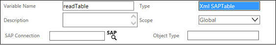

No
The XML Variable of type 'XML SAPTable' is mainly used to store the SAP table information.
XML Variable of type 'XML SAPTable':
When the variable type is changed to XML SAPTable, following extra properties are displayed as seen in the image below.

Property Description:
'XML SAPTable' XML Variable Property |
Description |
SAP Application Server |
Use the edit icon to select the name of the table in the SAPTable explorer. After selecting the table name, the name of the server is displayed in this field. |
Object Type |
The selected table name is displayed in this field. |
See Creating XML Variable of type 'XML SAPTable' for more information.